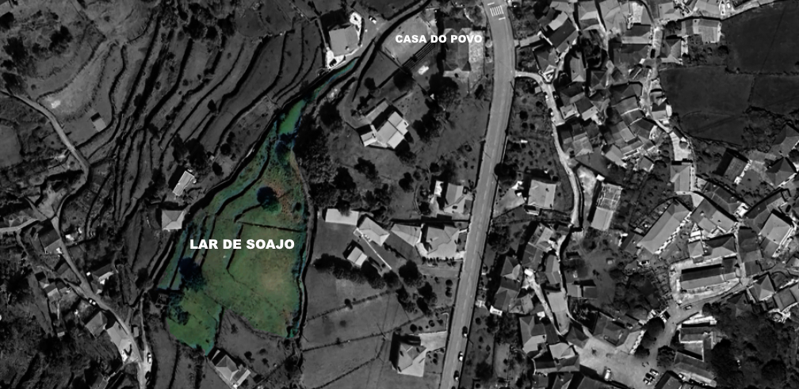

Lar de Soajo

Proposta
Construção de um novo edificio por tras da casa do povo , nos terrenos já adquiridos pela Camera Municipal de Arcos de Valdevez.A construção de um lar residencial na freguesia de Soajo acarreta um sem número de vantagens, desde logo pela já referida localização, que permitiria servir também as localidades vizinhas.
Possibilitaria colmatar uma necessidade sem desenraizar os idosos do seu meio social, o que tem consequências nefastas no bem-estar das pessoas, sobejamente conhecidas, agravadas pela falta de contacto com familiares e amigos, que têm muitas vezes dificuldades na deslocação, porque não têm meio de transporte, ressalvando-se que os transportes públicos são limitados e as alternativas são caras.
O despovoamento é um flagelo que assola Soajo e a mobilidade das pessoas mais idosas para outras freguesias em muito tem contribuído. Além do mais, o facto de Soajo não ter uma resposta social adequada, torna a freguesia pouco atrativa para a fixação de pessoas idosas que poderiam regressar da diáspora por ali terem uma alternativa que lhes garantisse uma velhice digna.
Ademais, a construção do lar gera empregabilidade e potencia a fixação de agregados familiares na freguesia, colmatando-se, dessa forma, o já referido despovoamento e envelhecimento populacional. Vive-se a década do Envelhecimento Saudável, pelo que
, envidar os esforços necessários para a construção do Lar de Idosos, em Soajo, nos próximos anos, só abonara a comunidade local e as populações das freguesias limitrofes.